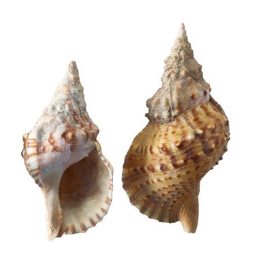

소개
우리나라의 고둥류 중 가장 큰 종이다. 잘 발견되지 않는 희귀종으로 수심 10~20m에서도 발견되며 남해안 외해 도서들에서는 수심50m이상에서도 발견된다.
멸종위기에 처한 종이면서 한편으로는 식용으로도 이용되는데 조사에 따르면 대부분의 어민과 상인들이 이 종이 멸종위기종인지를 모르고 있기 때문인 것으로 나타났다.
불가사리의 천적이며, 배에서 또는 부두에서 나팔로도 사용한다.
외관
처음 태어난 꼭지부분은 보통 주홍색이고, 몸의 층을 비롯한 아래의 층들에서는 황색 바탕에 붉은 갈색 또는 진한 갈색 무늬가 밋밋한 격자상으로 나타나거나 개체에 따라 갈색 무늬가 약해지고 회백색이 강하게 나타나기도 한다.
각 층의 경계가 깊지 않아 경계가 명확하지 않으며, 꼭지 근처 층들에서는 보통 석회질 부착물들이 많기 때문에 식별이 어렵다. 몸통층과 그 다음 층에는 굵고 낮은 돌기로 된 가로 방향의 융기선이 2줄씩 있고 그 위의 층들에서는 불규칙한 돌기들이 있다.패각 표면에는 매우 얕은 융기선과 골이 이 물결 모양을 이루는데, 성체에서는 상당히 굵고 뚜렷해진다. 패각 입구 바깥면은 단단하며 내면은 백색이고, 테두리 쪽으로 넓고 길쭉한 주름 위에 흑갈색 때가 안쪽을 향해 있다. 입구 안쪽에는 긴 돌기가 있고, 위로는 여러 개의 주름이 있다. 수관구 즉 입구 위쪽의 뿔과 같은 돌기는 넓고 짧다.
